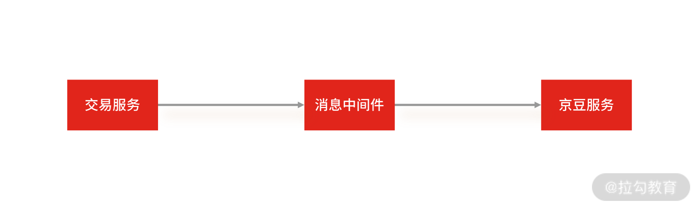
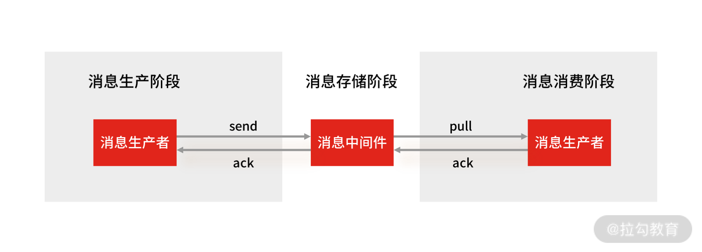
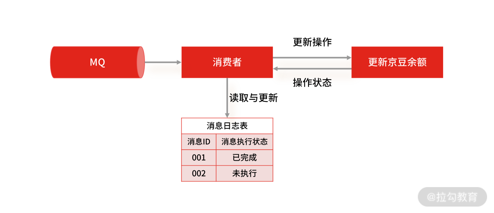
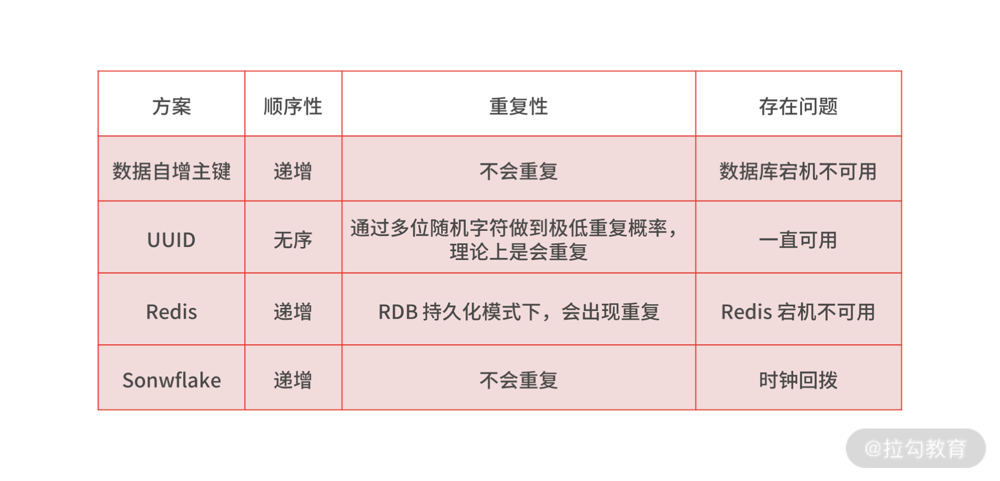

- 00 开篇词 中高级研发面试，逃不开架构设计这一环.md.html
- 01 研发工程师想提升面试竞争力，该具备这三个技术认知.md.html
- 02 研发工程师如何用架构师视角回答架构设计方案？.md.html
- 03 面试官如何考察与 CAP 有关的分布式理论？.md.html
- 04 亿级商品存储下，如何深度回答分布式系统的原理性问题？.md.html
- 05 海量并发场景下，如何回答分布式事务一致性问题？.md.html
- 06 分布式系统中，如何回答锁的实现原理？.md.html
- 07 RPC：如何在面试中展现出“造轮子”的能力？.md.html
- 08 MQ：如何回答消息队列的丢失、重复与积压问题.md.html
- 08 案例串联 如何让系统抗住双十一的预约抢购活动？.md.html
- 09 如何回答 MySQL 的索引原理与优化问题？.md.html
- 10 如何回答 MySQL 的事务隔离级别和锁的机制？.md.html
- 11 读多写少：MySQL 如何优化数据查询方案？.md.html
- 12 写多读少：MySQL 如何优化数据存储方案？.md.html
- 13 缓存原理：应对面试你要掌握 Redis 哪些原理？.md.html
- 14 缓存策略：面试中如何回答缓存穿透、雪崩等问题？.md.html
- 15 如何向面试官证明你做的系统是高可用的？.md.html
- 16 如何从架构师角度回答系统容错、降级等高可用问题？.md.html
- 17 如何向面试官证明你做的系统是高性能的？.md.html
- 18 如何从架构师角度回答怎么应对千万级流量的问题？.md.html
- 19 彩蛋 互联网架构设计面试，你需要掌握的知识体系.md.html
- 结束语 程序员的道、术、势.md.html
- 捐赠
08 MQ：如何回答消息队列的丢失、重复与积压问题
这一讲，我们将围绕 MQ 消息中间件，讨论你经常被问到的高频设计问题。
面试官在面试候选人时，如果发现候选人的简历中写了在项目中使用了 MQ 技术（如 Kafka、RabbitMQ、RocketMQ），基本都会抛出一个问题：在使用 MQ 的时候，怎么确保消息 100% 不丢失？
这个问题在实际工作中很常见，既能考察候选者对于 MQ 中间件技术的掌握程度，又能很好地区分候选人的能力水平。接下来，我们就从这个问题出发，探讨你应该掌握的基础知识和答题思路，以及延伸的面试考点。
案例背景
以京东系统为例，用户在购买商品时，通常会选择用京豆抵扣一部分的金额，在这个过程中，交易服务和京豆服务通过 MQ 消息队列进行通信。在下单时，交易服务发送“扣减账户 X 100 个京豆”的消息给 MQ 消息队列，而京豆服务则在消费端消费这条命令，实现真正的扣减操作。

那在这个过程中你会遇到什么问题呢？
案例分析
要知道，在互联网面试中，引入 MQ 消息中间件最直接的目的是：做系统解耦合流量控制，追其根源还是为了解决互联网系统的高可用和高性能问题。
- 系统解耦：用 MQ 消息队列，可以隔离系统上下游环境变化带来的不稳定因素，比如京豆服务的系统需求无论如何变化，交易服务不用做任何改变，即使当京豆服务出现故障，主交易流程也可以将京豆服务降级，实现交易服务和京豆服务的解耦，做到了系统的高可用。
- 流量控制：遇到秒杀等流量突增的场景，通过 MQ 还可以实现流量的“削峰填谷”的作用，可以根据下游的处理能力自动调节流量。
不过引入 MQ 虽然实现了系统解耦合流量控制，也会带来其他问题。
引入 MQ 消息中间件实现系统解耦，会影响系统之间数据传输的一致性。 我们在 04 讲提到过，在分布式系统中，如果两个节点之间存在数据同步，就会带来数据一致性的问题。同理，在这一讲你要解决的就是：消息生产端和消息消费端的消息数据一致性问题（也就是如何确保消息不丢失）。
而引入 MQ 消息中间件解决流量控制， 会使消费端处理能力不足从而导致消息积压，这也是你要解决的问题。
所以你能发现，问题与问题之间往往是环环相扣的，面试官会借机考察你解决问题思路的连贯性和知识体系的掌握程度。
那面对“在使用 MQ 消息队列时，如何确保消息不丢失”这个问题时，你要怎么回答呢？首先，你要分析其中有几个考点，比如：
- 如何知道有消息丢失？
- 哪些环节可能丢消息？
- 如何确保消息不丢失？
候选人在回答时，要先让面试官知道你的分析思路，然后再提供解决方案： 网络中的数据传输不可靠，想要解决如何不丢消息的问题，首先要知道哪些环节可能丢消息，以及我们如何知道消息是否丢失了，最后才是解决方案（而不是上来就直接说自己的解决方案）。就好比“架构设计”“架构”体现了架构师的思考过程，而“设计”才是最后的解决方案，两者缺一不可。
案例解答
我们首先来看消息丢失的环节，一条消息从生产到消费完成这个过程，可以划分三个阶段，分别为消息生产阶段，消息存储阶段和消息消费阶段。

消息的生产、存储与消费
- 消息生产阶段： 从消息被生产出来，然后提交给 MQ 的过程中，只要能正常收到 MQ Broker 的 ack 确认响应，就表示发送成功，所以只要处理好返回值和异常，这个阶段是不会出现消息丢失的。
- 消息存储阶段： 这个阶段一般会直接交给 MQ 消息中间件来保证，但是你要了解它的原理，比如 Broker 会做副本，保证一条消息至少同步两个节点再返回 ack（这里涉及数据一致性原理，我在 04 讲中已经讲过，在面试中，你可以灵活延伸）。
- 消息消费阶段： 消费端从 Broker 上拉取消息，只要消费端在收到消息后，不立即发送消费确认给 Broker，而是等到执行完业务逻辑后，再发送消费确认，也能保证消息的不丢失。
方案看似万无一失，每个阶段都能保证消息的不丢失，但在分布式系统中，故障不可避免，作为消费生产端，你并不能保证 MQ 是不是弄丢了你的消息，消费者是否消费了你的消息，所以，本着 Design for Failure 的设计原则，你还是需要一种机制，来 Check 消息是否丢失了。
紧接着，你还可以向面试官阐述怎么进行消息检测？ 总体方案解决思路为：在消息生产端，给每个发出的消息都指定一个全局唯一 ID，或者附加一个连续递增的版本号，然后在消费端做对应的版本校验。
具体怎么落地实现呢？你可以利用拦截器机制。 在生产端发送消息之前，通过拦截器将消息版本号注入消息中（版本号可以采用连续递增的 ID 生成，也可以通过分布式全局唯一 ID生成）。然后在消费端收到消息后，再通过拦截器检测版本号的连续性或消费状态，这样实现的好处是消息检测的代码不会侵入到业务代码中，可以通过单独的任务来定位丢失的消息，做进一步的排查。
这里需要你注意：如果同时存在多个消息生产端和消息消费端，通过版本号递增的方式就很难实现了，因为不能保证版本号的唯一性，此时只能通过全局唯一 ID 的方案来进行消息检测，具体的实现原理和版本号递增的方式一致。
现在，你已经知道了哪些环节（消息存储阶段、消息消费阶段）可能会出问题，并有了如何检测消息丢失的方案，然后就要给出解决防止消息丢失的设计方案。解决方案你可以参考 05 讲中的 “基于 MQ 的可靠消息投递”的机制，我这里就不再赘述。
回答完“如何确保消息不会丢失？”之后，面试官通常会追问“怎么解决消息被重复消费的问题？” 比如：在消息消费的过程中，如果出现失败的情况，通过补偿的机制发送方会执行重试，重试的过程就有可能产生重复的消息，那么如何解决这个问题？
这个问题其实可以换一种说法，就是如何解决消费端幂等性问题（幂等性，就是一条命令，任意多次执行所产生的影响均与一次执行的影响相同），只要消费端具备了幂等性，那么重复消费消息的问题也就解决了。
我们还是来看扣减京豆的例子，将账户 X 的金豆个数扣减 100 个，在这个例子中，我们可以通过改造业务逻辑，让它具备幂等性。

扣减京豆
最简单的实现方案，就是在数据库中建一张消息日志表， 这个表有两个字段：消息 ID 和消息执行状态。这样，我们消费消息的逻辑可以变为：在消息日志表中增加一条消息记录，然后再根据消息记录，异步操作更新用户京豆余额。
因为我们每次都会在插入之前检查是否消息已存在，所以就不会出现一条消息被执行多次的情况，这样就实现了一个幂等的操作。当然，基于这个思路，不仅可以使用关系型数据库，也可以通过 Redis 来代替数据库实现唯一约束的方案。
在这里我多说一句，想要解决“消息丢失”和“消息重复消费”的问题，有一个前提条件就是要实现一个全局唯一 ID 生成的技术方案。这也是面试官喜欢考察的问题，你也要掌握。
在分布式系统中，全局唯一 ID 生成的实现方法有数据库自增主键、UUID、Redis，Twitter-Snowflake 算法，我总结了几种方案的特点，你可以参考下。

我提醒你注意，无论哪种方法，如果你想同时满足简单、高可用和高性能，就要有取舍，所以你要站在实际的业务中，说明你的选型所考虑的平衡点是什么。我个人在业务中比较倾向于选择 Snowflake 算法，在项目中也进行了一定的改造，主要是让算法中的 ID 生成规则更加符合业务特点，以及优化诸如时钟回拨等问题。
当然，除了“怎么解决消息被重复消费的问题？”之外，面试官还会问到你“消息积压”。 原因在于消息积压反映的是性能问题，解决消息积压问题，可以说明候选者有能力处理高并发场景下的消费能力问题。
你在解答这个问题时，依旧要传递给面试官一个这样的思考过程： 如果出现积压，那一定是性能问题，想要解决消息从生产到消费上的性能问题，就首先要知道哪些环节可能出现消息积压，然后在考虑如何解决。
因为消息发送之后才会出现积压的问题，所以和消息生产端没有关系，又因为绝大部分的消息队列单节点都能达到每秒钟几万的处理能力，相对于业务逻辑来说，性能不会出现在中间件的消息存储上面。毫无疑问，出问题的肯定是消息消费阶段，那么从消费端入手，如何回答呢？
如果是线上突发问题，要临时扩容，增加消费端的数量，与此同时，降级一些非核心的业务。通过扩容和降级承担流量，这是为了表明你对应急问题的处理能力。
其次，才是排查解决异常问题，如通过监控，日志等手段分析是否消费端的业务逻辑代码出现了问题，优化消费端的业务处理逻辑。
最后，如果是消费端的处理能力不足，可以通过水平扩容来提供消费端的并发处理能力，但这里有一个考点需要特别注意， 那就是在扩容消费者的实例数的同时，必须同步扩容主题 Topic 的分区数量，确保消费者的实例数和分区数相等。如果消费者的实例数超过了分区数，由于分区是单线程消费，所以这样的扩容就没有效果。
比如在 Kafka 中，一个 Topic 可以配置多个 Partition（分区），数据会被写入到多个分区中，但在消费的时候，Kafka 约定一个分区只能被一个消费者消费，Topic 的分区数量决定了消费的能力，所以，可以通过增加分区来提高消费者的处理能力。
总结
至此，我们讲解了 MQ 消息队列的热门问题的解决方案，无论是初中级还是高级研发工程师，本讲都是你需要掌握的，你都可以从这几点出发，与面试官进行友好的交流。我来总结一下今天的重点内容。
- 如何确保消息不会丢失？ 你要知道一条消息从发送到消费的每个阶段，是否存在丢消息，以及如何监控消息是否丢失，最后才是如何解决问题，方案可以基于“ MQ 的可靠消息投递 ”的方式。
- 如何保证消息不被重复消费？ 在进行消息补偿的时候，一定会存在重复消息的情况，那么如何实现消费端的幂等性就这道题的考点。
- 如何处理消息积压问题？ 这道题的考点就是如何通过 MQ 实现真正的高性能，回答的思路是，本着解决线上异常为最高优先级，然后通过监控和日志进行排查并优化业务逻辑，最后是扩容消费端和分片的数量。
在回答问题的时候，你需要特别注意的是，让面试官了解到你的思维过程，这种解决问题的能力是面试官更为看中的，比你直接回答一道面试题更有价值。
另外，如果你应聘的部门是基础架构部，那么除了要掌握本讲中的常见问题的主线知识以外，还要掌握消息中间件的其他知识体系，如：
- 如何选型消息中间件？
- 消息中间件中的队列模型与发布订阅模型的区别？
- 为什么消息队列能实现高吞吐？
- 序列化、传输协议，以及内存管理等问题
- ……
© 2019 - 2023 Liangliang Lee. Powered by gin and hexo-theme-book.